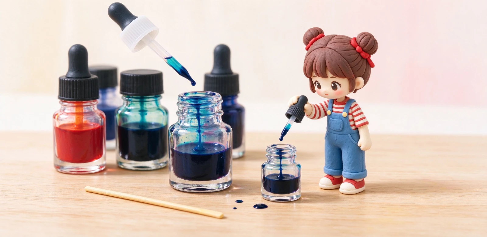

語意摘要：不同廠牌墨水的酸鹼值與配方各不相同，酸性遇上鹼性會起化學反應，產生沉澱或凝膠，塞住筆舌很難清。想調色，最安全的是同廠同類的染料墨、在小玻璃瓶裡少量試，靜置二十四到四十八小時沒問題再上筆，並詳細記錄品牌、比例與日期。多數老手的結論是：好玩可以試，但別拿貴筆賭，也別常調。
調墨最大的雷：酸鹼打架起沉澱
為什麼不能隨便把 A 牌藍墨跟 B 牌紅墨混在一起？因為每個廠牌的墨水配方都是商業機密，pH 值、介面活性劑、防腐配方都不同。一瓶偏酸、一瓶偏鹼，倒在一起就像把醋跟小蘇打混了，當下可能看不出，過半天卻長出一團沉澱或果凍狀的凝膠。
這個沉澱一旦跑進筆舌那細窄的鰭片裡，就很難沖乾淨，等於宣判一支筆要動手術。這也是為什麼多數老手的第一句勸是：「新手其實不用調墨。」
什麼墨能調、什麼絕對別碰
| 種類 | 能不能調 | 原因 |
|---|---|---|
| 同廠同類染料墨 | 相對安全 | 配方接近、酸鹼相近 |
| 不同廠牌染料墨 | 高風險 | 酸鹼未知，易沉澱 |
| 顏料墨 | 不要混 | 固體顆粒更易卡筆 |
| Shimmer 亮粉墨 | 不要混 | 粉末沉積難清 |
| 防水/永久墨 | 不要混 | 定著配方互相干擾 |
最保險的作法：只調「同一個品牌、同一類型」的兩瓶染料墨；跨廠、跨類（染料混顏料）就放棄這個念頭。
真想試，正確的調墨流程
如果你手癢想試，照這個流程走，把損失降到最低：
- 準備乾淨的小玻璃空瓶（喝完的試色瓶、針管都行）。
- 先用滴管或針筒取少量，一次各滴幾滴，不要一次倒半瓶。
- 先用 1:1 打底，看太濃再慢慢加量多的那一方。
- 蓋起來輕搖，靜置至少二十四到四十八小時。
- 期間觀察：有沒有混濁、沉澱、分層、結膠——有就整瓶丟掉，別上筆。
- 都沒事，再拿一支便宜、捨不得的筆吸一點試寫。

調出滿意的色，要怎麼記才重現得了
調出一個超滿意的色，隔天想再調卻記不得比例，是調墨最沮喪的事。養成紀錄習慣，在小瓶標籤上寫：兩個牌子名稱、各幾滴（或幾比幾）、調製日期。
更穩的做法是同時在試色條上畫一道，寫上日期與配方貼進你的墨色筆記。下次想重現，照著數字再加墨即可，不會失憶。
調過的墨水別放太久。自調墨沒有原廠的防腐配方，比較容易長霉變質，建議調了就在一兩個月內用完，別當收藏放著。
調墨值得嗎？
講白了，現在市售墨水顏色已經超過你一輩子用的量，真的需要某個特定色，多半現成就有。調墨比較像是玩家的實驗樂趣，不是必要的省錢或求色手段。
少量加入乾淨的蒸餾水或純水，理論上可調淡，但會破壞原廠的防腐與酸鹼平衡，容易長霉、改變出墨，非必要不做。
看到沉澱、混濁、結膠就整瓶丟掉，千萬別抱著「再沖一沖」的念頭裝進筆，卡住筆舌清起來很痛苦。
有些品牌出「可混墨」系列或透明基底墨，標榜配方相容；一般墨請一律假設不相容來處理。
常見問題 FAQ
鋼筆墨水可以自己調色嗎？
理論上可以，但風險高。不同廠牌酸鹼配方不同，混在一起可能起沉澱或凝膠堵筆。真要調，只用同廠同類的染料墨、小量試、靜置觀察後再上筆。
為什麼調墨會起沉澱？
墨水是化學配方，酸性遇上鹼性會起反應生成沉澱或凝膠。這個反應常不會馬上發生，所以一定要靜置一天以上檢查，不能調完立刻寫。
什麼墨水絕對不能拿來調？
顏料墨、shimmer 亮粉墨、防水或永久墨都不要跟別的墨混，它們的固體顆粒與定著配方更容易卡筆或互相干擾。
調出喜歡的顏色怎麼重現？
在瓶標與試色條上記下兩個品牌名、比例（幾比幾）與調製日期，下次照數字重配即可；自調墨沒防腐配方，最好一兩個月內用完。
調墨是省錢的方法嗎？
不是。現在市售顏色非常齊全，真要某色多半現成就有；調墨比較像玩家的實驗樂趣，不是必要，新手別為了省錢硬調。
資料來源與核實依據
- What Inks Are Safe to Mix?（避免顏料/亮粉/永久墨，小瓶先試）（Fountain Pen Revolution）
- Fountain Pen Ink Blending Guide（混濁沉澱勿上筆、小瓶静置24小時）（Fountain Pen Revolution）
- Can You Mix Different Fountain Pen Inks?（不同配方混雜風險）（Ferris Wheel Press）
- Never Mix Two Different Inks?（酸鹼相異會起沉澱）（The Fountain Pen Network）
相關文章推薦

鋼筆墨水怎麼選？染料、顏料、防水墨水差別與新手入門
新手第一瓶墨水，九成情況選「水性染料墨水」就對了：顏色飽滿、不傷筆、好清洗；顏料跟防水墨水是畫圖、要防潑水才需要的進階款。

墨水會過期嗎？墨水保存、發霉、沉澱與染尖處理
墨水沒有像食品那樣的有效期限，但放錯地方、太久會長霉沉澱；寫樂官方給的基準是卡水約 2 年、瓶裝約 3 年用完最安心。

鋼筆多久洗一次？鋼筆清洗、換墨水與收筆完整步驟
鋼筆其實不用天天洗，但有兩個時機一定要沖：換顏色前、跟要放超過兩週不寫時。用室溫清水把筆舌沖到水變清，是所有保養的基本功。